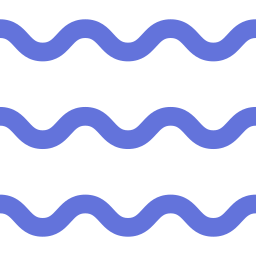

Trains, Streams and Boats
A boat travels 24 km upstream at 8 km/h and 36 km downstream at 12 km/h. Find the total time.
Q


Total Time = ?
Time = Distance ÷ Speed - twice

24 km · 8 km/h
24 km up at 8 km/h and, 36 km down at 12 km/h. Total time?
Upstream + Downstream
Given
Upstream Distance = 24 km
Upstream Speed = 8 km/h
Downstream Distance = 36 km
Downstream Speed = 12 km/h
Upstream Speed = 8 km/h
Downstream Distance = 36 km
Downstream Speed = 12 km/h
Step 1
Time taken upstream
Time = 248 = 3 hours
Time = 248 = 3 hours
Step 2
Time taken downstream
Time = 3612 = 3 hours
Both parts done, one after the other - simply add them.
Time = 3612 = 3 hours
Both parts done, one after the other - simply add them.
Step 3
Total Time =
3 + 3
= 6 hours
G
Upstream = 24 km @ 8 km/h
Downstream = 36 km @ 12 km/h
Downstream = 36 km @ 12 km/h
1
Upstream: 24 ÷ 8 = 3h
2
Downstream: 36 ÷ 12 = 3h
3
Total = 3 + 3 = 6 hours